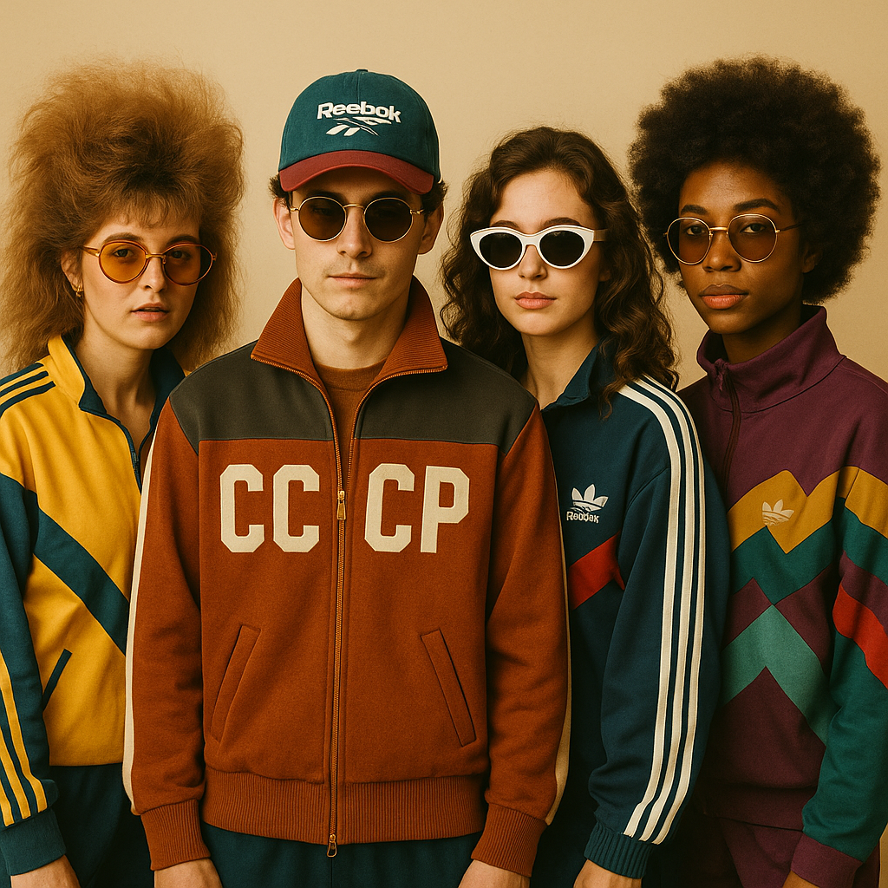

Создай свой ретро-стиль с Петлёй моды
Настоящая мода из прошлого века — в новой жизни. Будь дерзким. Будь ностальгичным.
Перейти в каталог

Настоящая мода из прошлого века — в новой жизни. Будь дерзким. Будь ностальгичным.
Перейти в каталог